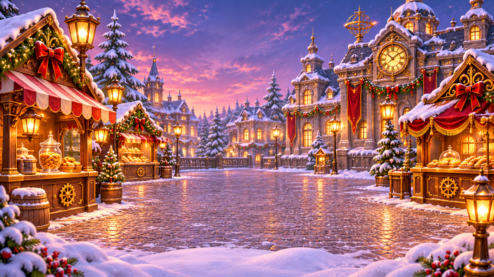
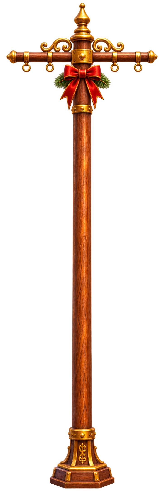
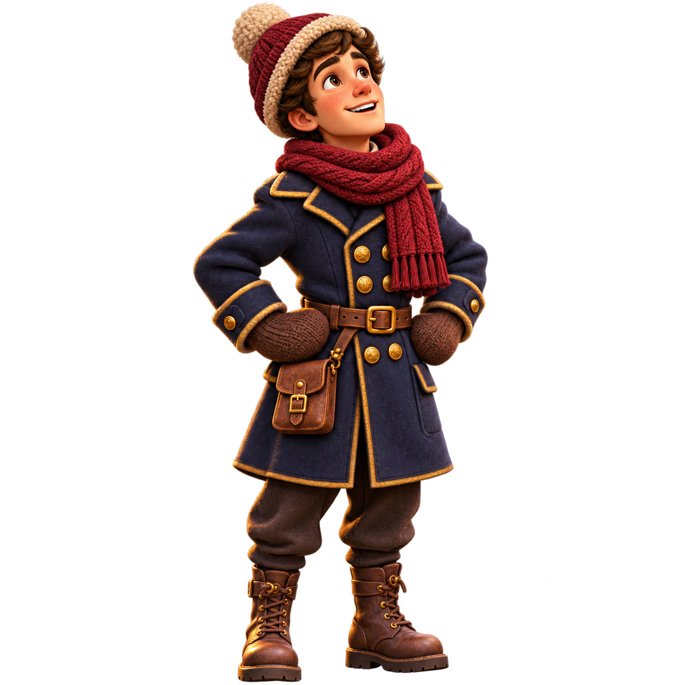

6 декабряОГЭПодъём 0 из 3




Подъём начинается у подножия столба
Высота 0%
Проверяем публикацию заданий шестого дня…
Финн готов к подъёму. Реши первое задание!
0 из 3 подъёмов10–20 минут
🎁 4 из 4 подарковОшибки: 0

Тик: «Каждый верный ответ поможет Финну подняться. А упавшие подарки мы обязательно вернём!»